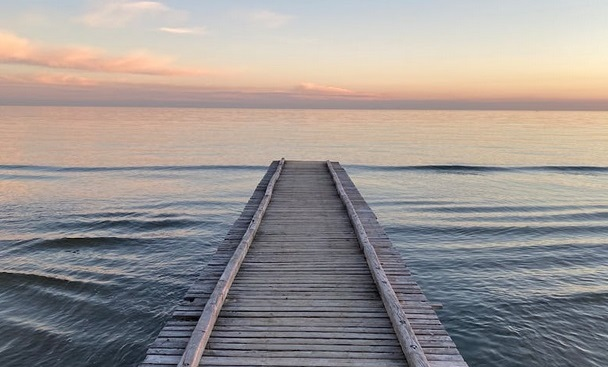

Why Lido di Jesolo?
Jesolo is a seaside resort town in the Metropolitan City of Venice, Italy. Its 15 kilometres of beaches, called Lido di Jesolo, make it a favourite destination of many visitors. With around 5.5 million visitors per year, Jesolo ranks second among beach resorts in the country for number of tourists. It ranks 6th overall as a tourist destination, immediately behind the major cities of Rome, Milan, Venice and Florence.
Fun fact: The official spelling is "Jesolo", while the use of "J" here is a rare example of a retained archaism, as the letter does not exist in the modern standard Italian alphabet, except in loanwords and proper names.